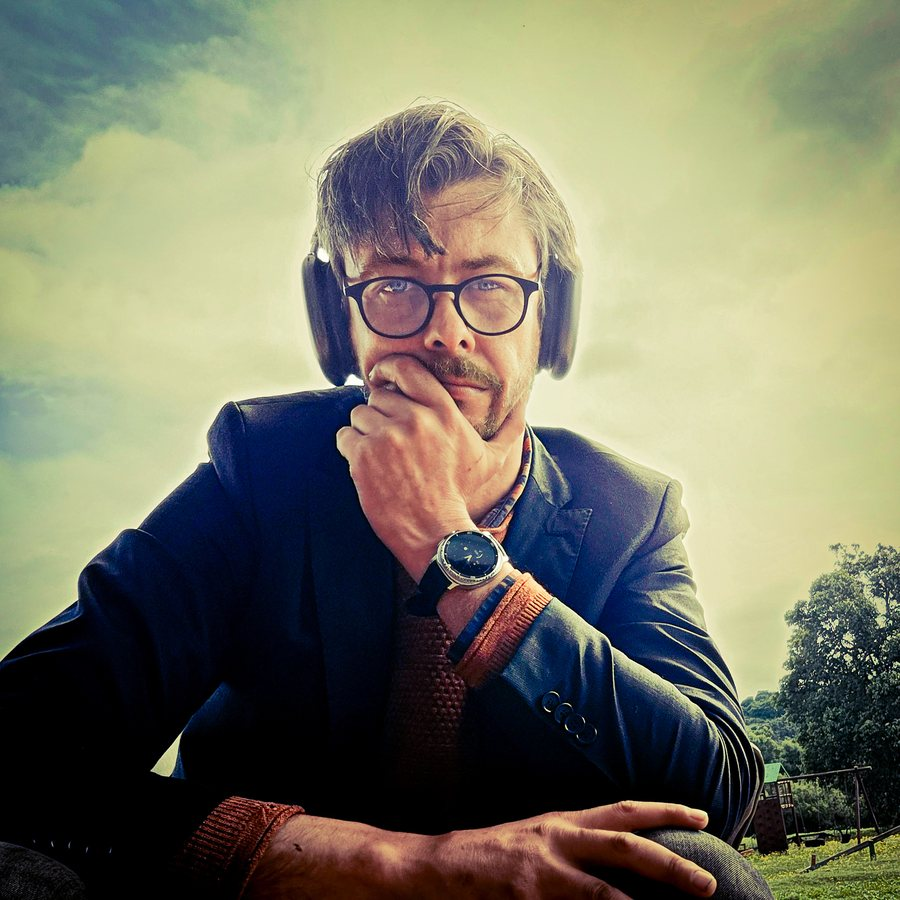
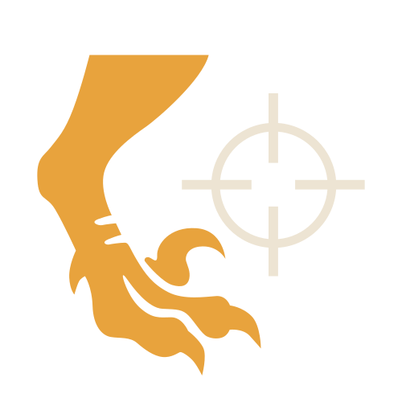

Specimen 09 · Velociraptor designii · excavated Jeffreys Bay, ZA
I design
the system
before the screen.
Layer 00 — Surface
Specimens recovered
Three flagship digs. Each one logged: the brief, what AI proposed, what I kept and what shipped.
Specimen 01 · Scandinavia · Mobile app + raffle site
Pantelotteriet
A recycling lottery where every return is a ticket. Every flow was journey-mapped, then proven in a Claude Code prototype before engineering wrote a line.
Read the dig report →↙ live logic: tabs, countdown and state changes — built with Claude Code
Specimen 02 · Astria Systems · 2018–now
iGaming platform, product-owned
Promoted from Product Designer to Jr. Product Owner. UX/UI across Wonderlabz, Playsafe and Pantelotteriet — backlog, flows and design system in one pair of claws.


Specimen 03 · Indiemode · Fashion
A week of build in two days
Full-site redesign with Claude as build partner. I directed hierarchy and brand; Claude wrote the code.
Read the dig report →Layer 01 — The AI stratum
AI is bedded in.
Judgment is mine.
Claude runs through every stage — chat, Claude Code, Figma MCP and custom skills — with ChatGPT and Gemini in the daily rotation. Here is exactly where AI sits, and where it doesn't.
never automated
- User interviews
- Prioritisation
- Final visual judgment
Tool strata — thickness = how much of the work it touches
Chat · Claude Code · Figma MCP · custom skills
Tools I've built with Claude
Designer-directed, Claude-built, shipped to GitHub Pages in push sessions.
A React command centre wired to Gmail through MCP.
Inbox triage that turns email into ClickUp tasks with Claude.
Custom Claude skills for Figma scripting and production.
Field reports · 10 verified
From the people who dug with me

Managers, founders, mentors and teammates — tagged and hung out to read. Tap any tag for the full report.
Layer 02 — iGaming bedrock · 2018–2025
Six years of high-stakes pixels
Live products for lottery and gaming audiences in Scandinavia, South Africa and the UK. Plus the motion, brand and personal work underneath.
 SamuraiGeishaCupcake Space Unicorn
SamuraiGeishaCupcake Space Unicorn Mayan Madness
Mayan Madness Atlantis
Atlantis Vote-Betting App
Vote-Betting App
Layer 03 — The specimen
Twenty years.
Every era left a mark.
I started in print and brand, moved into web and motion, spent six years shipping iGaming products, and now own product decisions at Astria Systems. I design with the whole system in view, then use AI to prove it works before anyone builds it.
Professional Diploma in UX Design — UX Design Institute, Dublin · 27 certifications
Bedrock
You've hit bedrock.
Let's build on it.
Jeffreys Bay, South Africa · Remote worldwide · Open to relocate anywhere in South Africa
